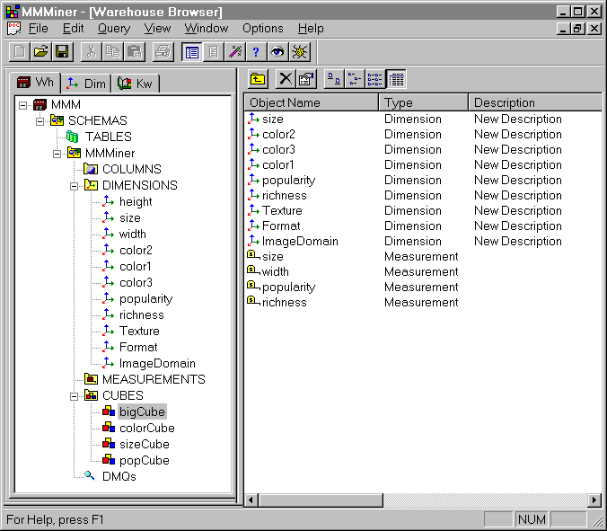
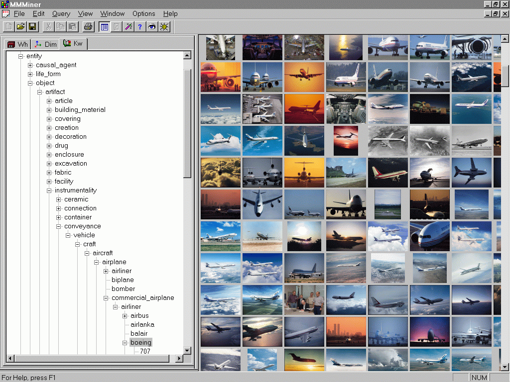
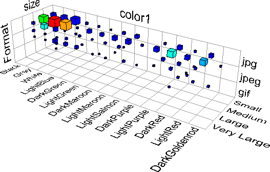
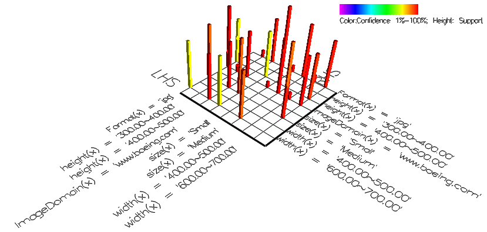
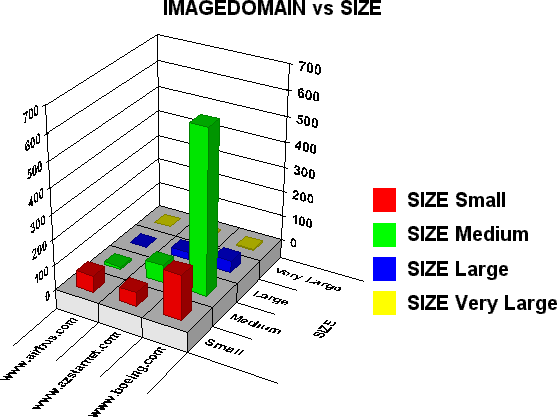
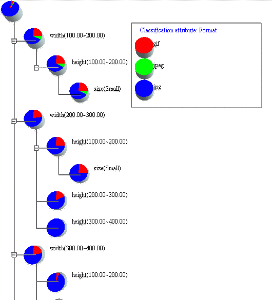

MultiMediaMiner data warehouse with cubes and dimensions:
The figure shows the user interface of the MultiMediaMiner data warehouse
with 4 data cubes and the dimensions and measurements defined in one of
them. ColorCube contains dimentions pertaining to colour and texture, SizeCube
contains mainly numeric dimensions like image size, width, height, etc.,
while PopCube contains dimensions related to popularity of images and richness
of web pages. BigCube contains most of the dimensions together.

Selecting (and browsing) data sets of images using keyword hierarchy:
Thumbnails of images and video frames in the database can be browsed
with MultiMediaMiner user interface. In this example thumbnails of commercial
airplanes pertaining to the airliner Boeing are displayed. This user interface
also allows the selection of a multimedia data set to be mined. The hierarchy
of keywords on the left is a section of the concept hierarchy automatically
generated by visiting some web sites containing aircraft images. By selecting
a keyword, the images associated with the word and its descendents are
selected. By clicking on a thumbnail, the image from the web and a list
of links to the web pages that contain it are displayed.

Browsing 3 dimensions of the multimedia data cube:
A visualization tool used to browse multi-dimensional data cubes, 3
dimensions at a time. The concept hierarchy defined on each dimension allows
drilling-down and rolling-up along a dimension. This type of data cube
browsing gives a big picture of the content of the database and even allows
to see rough clustering of data values. Selecting a sub-cube from the view
drills through it up to the raw data, and one can see the set of multimedia
items in the selected sub-cube and even the web pages that contain them.

Visualization of association rules:
A visualization of some association rules. The existence of a column
on the grid represents an association between the left-hand side parameters
and the right-hand side parameters. The height of the column depicts the
support of the association rule it represents while the colour of the column
describes the confidence of the rule.

MultiMediaMiner Characterizer:
The view describes in a histogram graph the general characteristics
for two dimensions: the size of the media in bytes and the Internet domain
from which the media was extracted. For this example, only three Internet
domains were considered, while the sizes were ``rolled-up'' to a higher
concept of media size (i.e. small, medium and large). With this user interface,
it is possible to visualize any two dimensions at a time, and drill-down
or roll-up along a given dimension to find characteristics on more concrete
values or specialized concepts.

MultiMediaMiner Classifier user interface:
The figure shows an output of the classifier module where a classification
of images and frames based on their width, height, and file size, with
reference to the distribution of image format, is made for a given Web
site. By clicking on a class, it is possible to drill through to the raw
data.